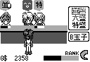

|
(c)2002-2003 ヅラChu＠てとら★ぽっと |
||||||||||||||||||
ダウンロードgyudon120.lzh（69,478bytes） |
||||||||||||||||||
内容 牛丼食えストのキャラを使ったミニゲーム。原作は拙作のiアプリ版（マイコンBASICマガジン2001年10月号ベスト・プログラマー賞）です。 原作であるiアプリ版に加え、注文に玉子を追加。また、お客の出現パターンや、待ち時間などの難易度調整についても、iアプリ版よりこだわってます。3分間のタイムアタックモードもあります。 |
||||||||||||||||||
遊び方『牛丼道』Ver1.20は、P/ECEのカーネルのバージョンが1.20以降で動作します。カーネルのバージョンアップをしていない方は、あらかじめP/ECE公式ページでカーネルのバージョンアップを済ませておいて下さい。 P/ECE開発環境に付属のP/ECEコミュニケータなどで、
をP/ECEに転送して下さい。P/ECEのフラッシュメモリの空き容量は、合計で16セクタ必要です。
を使うと、まとめて転送することも出来ます。 転送したら、ランチャから『牛丼道Ver1.2』を実行して下さい。 |
||||||||||||||||||
操作方法
|
||||||||||||||||||
お客様
|
||||||||||||||||||
更新履歴Ver1.2（2003/09/26）
Ver1.1（2002/02/06）
Ver1.0（2002/01/21）
Ver0.9（2002/01/15）
|
||||||||||||||||||
Special Thanks |
||||||||||||||||||
関連リンク
|
||||||||||||||||||